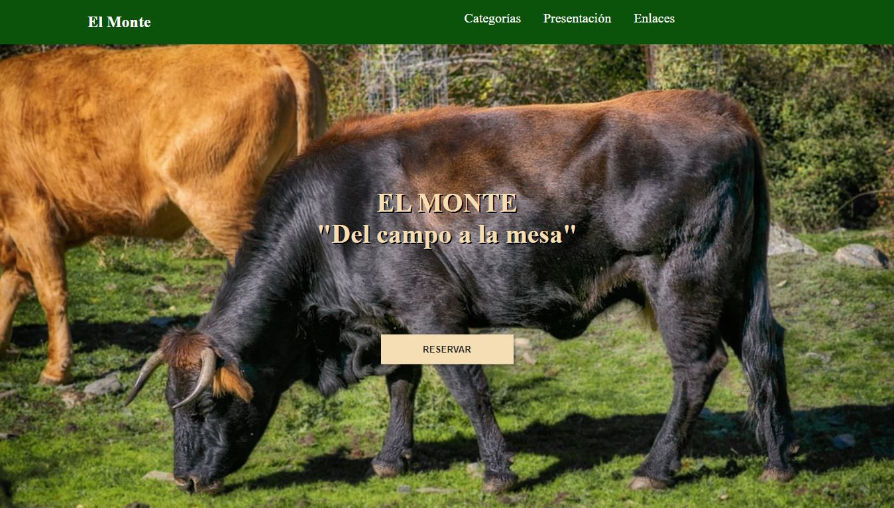
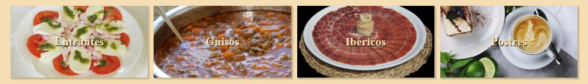
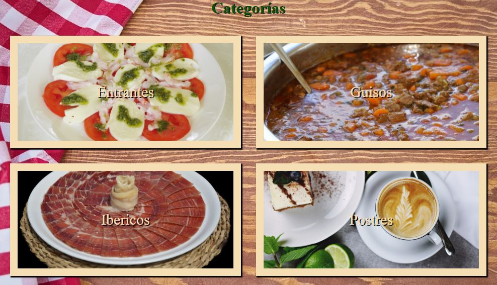

Presentación
En esta web se representa como estaría distribuida una aplicación web accesible de ejemplo de un restaurante, cuya función es, unicamente proporcionar información acerca de los productos que ofrece el restaurante, agrupando sus productos en categorías para que el usuario pueda encontrar mejor la información que desea consultar.
Ademas, el sitio web esta completamente adaptado para que sea correctamente visible en cualquier dispositivo, tanto moviles, como tablets, ademas de ordenadores portátiles y sobremesas.
Secciones
A continuación se describen las distintas secciones de la web.
Portada
Aqui se presenta la imagen de la portada con el lema del restaurante, además del botón para reservar mesa, que abriría un calendario con las horas disponibles.
Mas abajo, se puede ver un acceso directo a las categorías de productos de las que dispone el restaurante, para facilitar al usuario el acceso a la información que realmente le interesa cuando se trata de consultar el sitio web de un restaurante.
Categorías
En esta sección se muestran las diferentes categorias de productos que ofrece el restaurante.
Como se puede observar, se distinguen las categorias perfectamente con imagenes de un producto de ejemplo que represente a los productos que se pueden encontrar si se accede al interior de cada apartado.
En este caso, las categorías estan divididas en:
- Entrantes
- Guisos
- Ibéricos
- Postres
Enlaces
Aqui se encuentran los enlaces de las webs de las que se ha sacado la información y las imágenes que se han utilizado para el desarrollo de esta web.